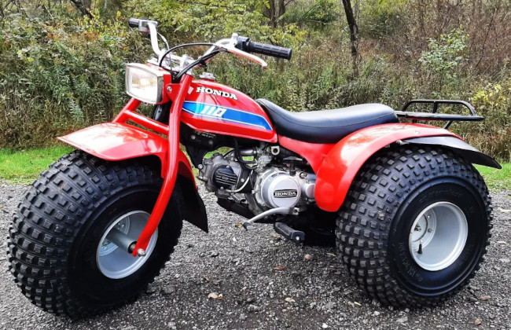

They don’t make ’em like that any more: Honda’s ATC110 all-terrain cycle

In the early 1980s there was a brief craze, mostly in the USA, for three-wheeled all-terrain motor vehicles. So far as I know, the Honda ATC range represented the only such machines to enter the UK in any quantity, and even these were hardly commonplace. Perhaps that’s no bad thing: they were unwieldy, impractical, and unstable. At the time, however, there wasn’t really an alternative, if you wanted a low-cost off-road vehicle.
There still isn’t.
The ATC range consisted of nominal 70cc, 90cc, and 110cc models. Honda did go on to produce a 250cc version but, although it was still three-wheeled, it was more like a conventional motorcycle in its construction. The ATC110 was the pinnacle of the range, with enough power and ruggedness to carry an adult rider at reasonable speed, and even to tow a trailer. The smaller models seem to have been aimed at children, but I’m not sure any responsible parent would buy a child something this lethal.
The ATC110 was a strikingly simple machine. It had a manual pull-starter like a chainsaw, a pedal-operated four-speed gearbox and chain drive like a motorcycle, and colossal balloon tyres like, well, I don’t even know. A moon buggy, perhaps? The single-cylinder engine was air-cooled, and the electrical system just a few wires.
Interestingly, it had a semi-automatic clutch, so changing gears was easy. This was important for marketing purposes, because you didn’t have to be a trained motorcyclist to ride the ATC. In fact, motorcycle experience was a disadvantage, because this thing was nothing like a motorcycle to drive.
The ATC had a solid rear axle, that is, it lacked a differential drive. A solid axle is an advantage in really lose terrain like soft mud, because a differential drive tends to apply power to whichever wheel turns more easily. In mud, this is usually the wheel that’s in the mire. I’m sure we’ve all had the experience of being stuck in a car on poor ground, one wheel spinning uselessly in a rut, while another wheel on firm ground just sits there, laughing at us. The solid rear axle ensured equal power distribution between the rear wheels, regardless of the terrain.
It shouldn’t be hard to see the problem, though. In anything other than soft mud or sand, we need a differential drive for steering. If both rear wheels have grip, and are powered together at the same speed, the vehicle will always want to travel in a straight line.
Consequently, it was nightmarish to steer in anything other than sand or soft mud. The only way to drive it on a road – and this wouldn’t have been legal in the UK – was to lean so far over that one rear wheel came completely off the ground. The first time I drove an ATC, it was straight into a neighbour’s car. The ATC cruelly mocked my attempts to steer with the handlebars.
Fortunately, the huge balloon tyre at the front came to my rescue by absorbing the impact, and I was spared an insurance claim and, perhaps, jail time.
Those balloon tyres weren’t just there to protect me from my negligence: they were an alternative to suspension, which the ATC notably lacked. As a means of absorbing shocks they were pretty effective, but suspension is part of the steering mechanism in any practical vehicle.

The best thing about the ATC110 was its price: about £500 new. In today’s money that’s about £1,500. It was difficult to get any kind of motor vehicle for that price, particularly from Honda. The ATC was cheap to run, too, as you’d expect of a light-weight, 110cc motorcycle. Routine servicing was easy, and needed no special tools. The fact that many are still running, forty years later, is a testament to the ATC’s reliability.
For all that, the ATC range wasn’t a success in the UK. Unlike in the USA, it wasn’t the terrible safety record that sunk the ATC. The real problem was that there weren’t many places you could legally ride one. Since they weren’t road-legal (thankfully) you’d have to take it on a trailer to any place where you could ride it, and there were few of those. Even specialist off-road driving tracks – or, more likely, their insurers – didn’t welcome them.
I bought my ATC for forestry work, but even there it wasn’t very practical. Unless the ground was very wet, the solid rear axle made it difficult to steer between the trees. I could tow a trailer full of timber with it: the machine had more than enough traction. But, with its comparatively light weight, putting any load on the trailer hitch would cause the front of the ATC to lift, rendering its front-wheel steering even more useless than it ordinarily was. The balloon tyres were alarmingly prone to punctures, and pull-starting the ATC on a cold winter’s morning was demanding enough to stop me feeling cold for long.
While routine servicing was cheap and straightforward, getting spare parts in the UK was neither, particularly as the ATCs became less popular. That pull-starter was particularly troublesome. It had a coiled spring wrapped around a toothed wheel, which engaged with some pegs when pulling the starter cord. The toothed wheel and the pegs wore out quite quickly, needing frequent replacement from (as I recall) the USA. The big, padded seat also tore easily, and I rarely saw one that wasn’t made primarily of duct tape. The plastic mudguards cracked under the slightest impact or, sometimes, spontaneously – another job for the duct tape.
In the end, I gave it up and bought a quad-bike instead. I rather regret that now, as ATCs in running order now sell for at least £2,000 – significantly more than they cost when new. Motor vehicles that ‘appreciate’, rather depreciate, in price are very unusual.
It’s a shame that we can no longer buy an all-terrain vehicle, however many wheels it has, for the same kind of price as an ATC. Today, Honda’s entry-level quad-bikes have prices starting at about £10,000. Of course, these are more sophisticated vehicles than the ATC, with four-wheel drive, computerized engine management, and all the modern gimmicks. Maintaining and servicing them requires specialist facilities, while the ATC was simple enough even for a dunce like me to work on.
I suppose the gap in the market has been filled, to some extent, by Chinese motor companies like CF Moto. Their quad-bikes have the same crude charm as the ATC – simple engines, chain drive, solid rear axles – but even these cost at least £4,000. I guess low cost and simplicity are no longer selling points in the automotive world, and that’s a shame.